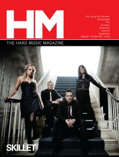

CMnexus
:
Contemporary Christian culture, music, and media.
Magazines
Profiles
Dove Awards
cmnexus.org
CM
nexus
→
Profiles
→
K
→
Kelly Kettering
Kelly Kettering
Writing credits listing

Sep 2009 in
HM
#139
"No Longer Comatose, But Alive and Well"
Skillet
To Speak of Wolves
-
Following Voices
Neviah Nevi
-
Tales of Terror
"Pillar Has A Lot To Fess Up To Lately"
Pillar
Nov 2009 in
HM
#140
Advent
"The Almost Has
Almost
Definitely Made It"
The Almost
"You Can Laugh If You Want To"
Austrian Death Machine
"Don't Let Matt Thiessen Fool You"
Relient K
Photoside Cafe
-
The Beauty Of Innocence Remains
Thousand Foot Krutch
-
Welcome To The Masquerade
Rodent Emporium
-
Sports
CMnexus
(noun)
The magazine index
of modern music
and Christianity
© 2011 CMnexus. Last updated May 2025.
Contact:
Rants and other correspondence to:
editor -AT- cmnexus
-DØT- org
About